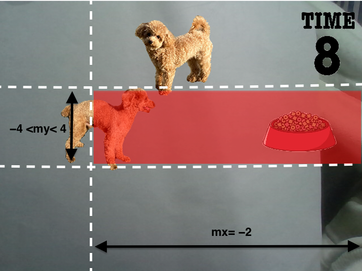

大変だったところ
秒数の画像が重なって表示されたことです。
実際の画像
解決方法
一つ前に表示していた秒数の画像を取得します。その画像を、Unregister()を使用して非表示にすることで重ならずに表示することができました。
拡張現実(AR)*1を用いたゲームで、プレイヤーは自分の手で画面内のワンちゃんを追い払います。ゲームクリアの条件は、レオンが時間内にご飯にたどり着くことです。
*1 実世界映像内にCGで表現した仮想物体を配置して見せること
研究室のライブラリを用いて、大学の授業で作成したゲームです。自分でarstestのヘッダ部と実装部を作成しました。touchable、reflective、reactiveのヘッダ部と実装部は授業で配布されたものです。そのため、3つのヘッダ部と実装部のソースコードは公開していません。
ソースコードはGit hubで公開しました。
arstestの実装部でポイントとなったソースコードと大変だったところ、その解決方法をまとめました。
time(&s_time); //ゲームの開始時の時刻を取得
e_time = s_time + limit; //開始時刻に10を加える
time(&n_time);//ゲーム中の時刻を取得
int c = e_time - n_time;//ゲーム終了までの時間を求める
int store = c + 1;//表示した時間の一つ前の時間を取得
g.Unregister(&limited[store]);//一つ前の時間を非表示
//10秒以内で、ゲームがまだ成功していないときに実行
if ((e_time + 1 > n_time) && (lx + 20 < fx - 40)) {
g.Register(&limited[c]);//カウントダウンの画像を表示
}
秒数の画像が重なって表示されたことです。
実際の画像
一つ前に表示していた秒数の画像を取得します。その画像を、Unregister()を使用して非表示にすることで重ならずに表示することができました。
/*レオンとマロンが同じ領域にいるときに実行*/
if (mx>-2 && lx>120 && my<4 && my>-4) {
back = lx - 130.0; /*現在のx座標から130だけ引いた値を設定*/
leon.SetPosition(back, 100.0, 0.0f, GL_ABSOLUTE); /*レオンが左に戻る*/
}
レオンと邪魔をするワンちゃんが重なったかどうかの判定方法です。
邪魔をするワンちゃんの座標が赤の領域に来たとき、レオンもその領域内に来たかどうかで判定しました。領域内に2匹が来たとき、レオンと邪魔をするワンちゃんが重なったとしました。
レオンとご飯の画像(スクリーン座標系)*2
邪魔をするワンちゃんの座標(ワールド座標系)*3
*2 ソースコードでのTexture2Dはスクリーン座標系。
*3 3D空間上の座標のこと。ソースコードでのTexture3Dはワールド座標系。
if (success) {
g.Register(&complete);//成功画像の登録
}else {
……
//時間にご飯いたどり着くことができたとき実行（成功）
if ((0 < c) && (fx - 40 < lx + 20)) {
//成功
success = 1;
}
}
成功画像を表示した後に、失敗画像が表示されてしまいました。そのときのプログラムが以下のようになります。
//失敗コード
//時間にご飯いたどり着くことができたとき実行（成功）
if ((0 < c) && (fx - 40 < lx + 20)) {
g.Register(&complete);//成功画像の登録
}
if文で「成功したとき」と「まだ成功していないとき」で場合分けをしました。一度成功すれば、成功画面の表示のプログラムだけが実行されるようになりました。
//時間内にご飯にたどり着けなかったときに実行（失敗）
if ((c < 0) && (lx + 20 < fx - 40)) {
//失敗画面表示
g.Register(&gameover);
}
レオンがご飯にたどり着いたかどうかの判定方法です。
レオンの顔がご飯の部分に来たときにゲーム成功となるようにしました。時間内に赤の領域にレオンがたどり着くことができなかった場合、ゲーム失敗としました。
レオンとご飯の画像(スクリーン座標系)*2
邪魔をするワンちゃんの座標(ワールド座標系)*3
*2 ソースコードでのTexture2Dはスクリーン座標系。
*3 3D空間上の座標のこと。ソースコードでのTexture3Dはワールド座標系。
成功の動画
邪魔をするワンちゃんを指で触れて追い払うことで、レオンは無事にご飯にたどり着くことができました。
失敗の動画
レオンが邪魔をするワンちゃんに邪魔されて、後ろに戻ってしまい、時間内にご飯にたどり着くことができませんでした。